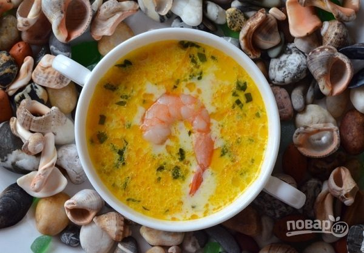
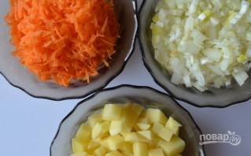
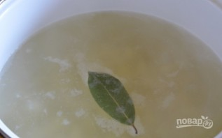
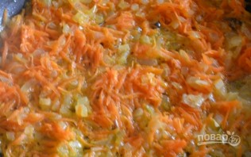
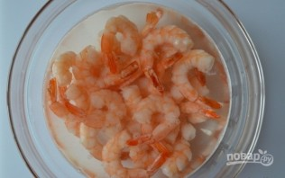
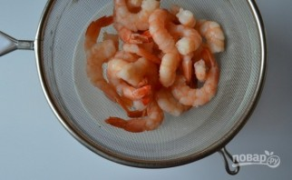
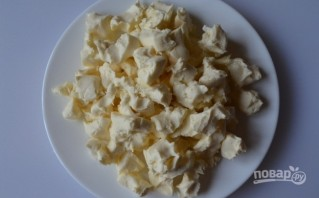
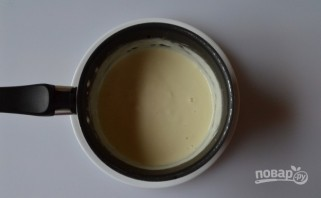
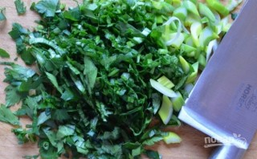
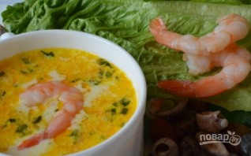

Если традиционные первые блюда хочется разнообразить чем-то несложным, но аппетитным, попробуйте сварить этот потрясающий супчик. Нежный, ароматный, безумно вкусный и совсем несложный. Здорово, да?
Наваристым мясным бульонам можно найти классную альтернативу. Предлагаю вам попробовать этот нехитрый способ, как приготовить суп сырный с креветками. Он чудесно сочетает в себе легкость и сытность. Такой вариант прекрасно подойдет для семейного обеда, так что не проходите мимо рецепта.
1. Для начала очистите все овощи. Картофель нарежьте небольшими кубиками, измельчите лук и натрите на терке морковь.
2. В кастрюле доведите до кипения примерно два литра воды, подсолите по вкусу, добавьте при желании лавровый лист. Опустите в кастрюлю картофель и варите на среднем огне.
3. Лук с морковью выложите на сковороду с растительным маслом и обжарьте. После отправьте в кастрюлю с картофелем.
4. Замороженные креветки опустите в кипяток на несколько минут.
5. После откиньте на дуршлаг, просушите и очистите. При желании нарежьте на 2-3 части.
6. Плавленые сырки нарежьте небольшими кубиками.
7. Выложите в небольшой сотейник и поставьте на огонь. Как только сыр полностью расплавится, переложите его в кастрюлю.
8. Измельчите немного свежей зелени при желании.
9. В кастрюлю добавьте креветки и через минуту снимите суп с огня. Всыпьте зелень и подавайте к столу. Приятного аппетита!